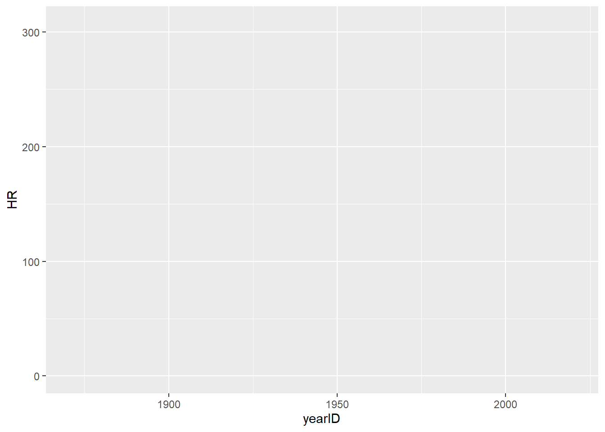
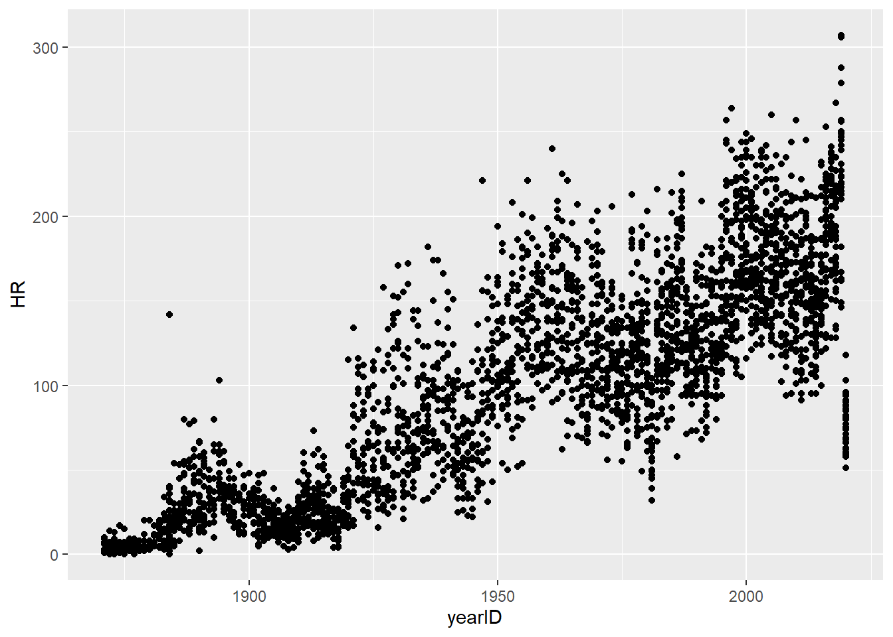
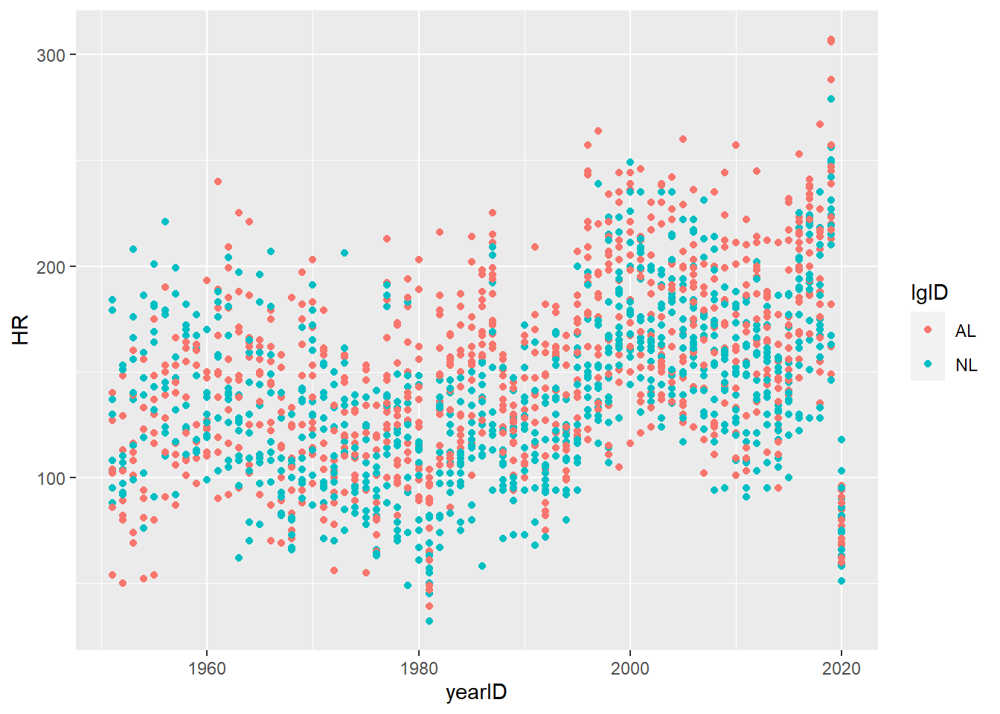
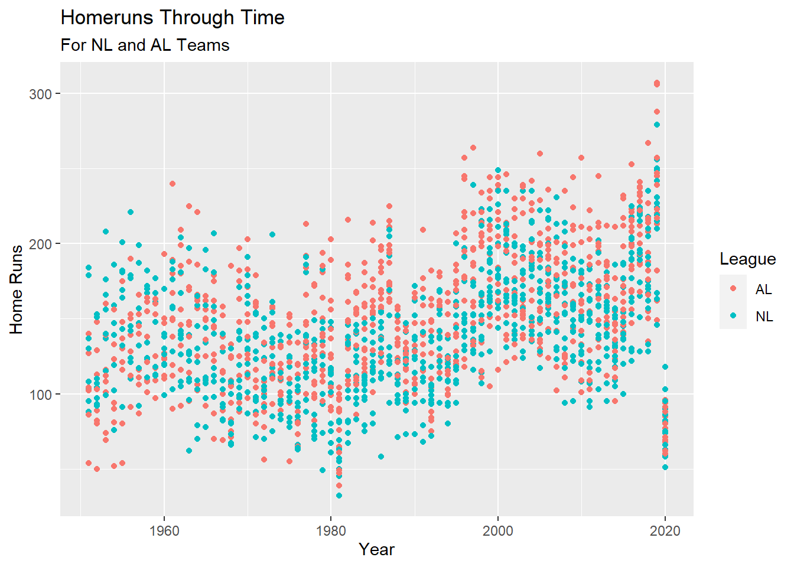
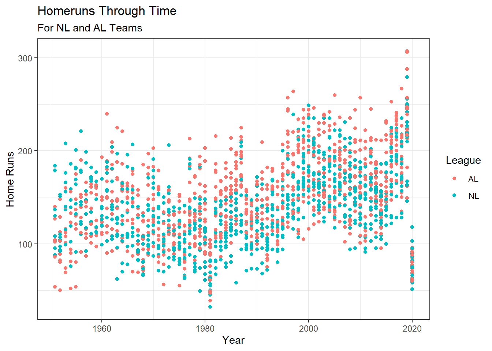
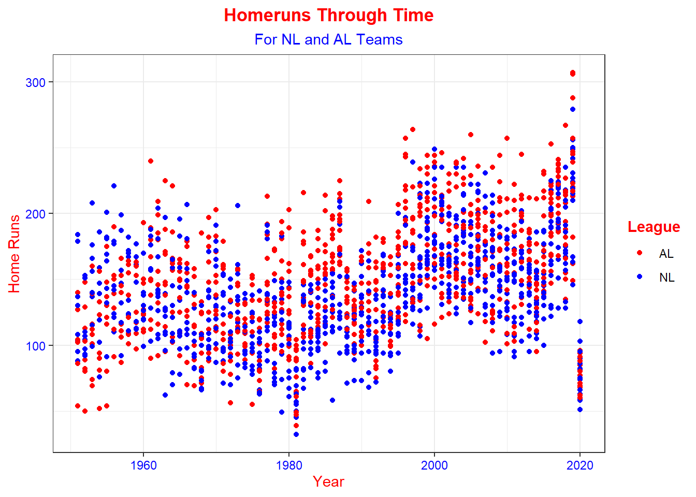

Chapter 5 ggplot2
ggplot2 is a package to help visualize your data. There is a bit of a learning curve to understand the basics of ggplot2. However, a useful cheat sheet can be found here: https://github.com/rstudio/cheatsheets/blob/master/data-visualization-2.1.pdf.
5.1 ggplot
The trick for ggplot is to start small and then add to the plot as you go. We will start with just two functions
- ggplot- initiates the plot
- aes - Aesthetic Mapping
Lets plot hr by year.

Now that we have created the plot we can visualize different graph types like:
- geom_line() - line graph
- geom_bar() - bar graph
- geom_point() - scatter plot
- And many more!
We can use the \(+\) sign to add to the graph.
# Lets narrow this down to just NL and AL teams
teams.plot <- Teams %>%
filter(lgID %in% c("AL", "NL") & yearID >1950)
# Plot home runs by year step 2.
ggplot(Teams, aes(x=yearID, y=HR)) +
geom_point()
It looks like homeruns have gone up year by year but is there a difference between the different leagues? \
We can specify “color” in the aes function to color each point based on which leage that team was in.

5.1.1 Challenge
Using the plot.data data create a scatter plot colored by team.
5.2 Labels
It is important to properly label your plots so they are easy to read and interpret. The most commonly editied labels are:
- xlab - x axis
- ylab - y axis
- ggtitle - plot time
- guides - legend title
# Plot home runs by year step 4.
ggplot(teams.plot, aes(x=yearID, y=HR, color=lgID)) +
geom_point() +
ggtitle("Homeruns Through Time", subtitle = "For NL and AL Teams") + # title and subtitle
xlab("Year") +
ylab("Home Runs") +
guides(color= guide_legend(title = "League"))
There are also many built in themes to make the over all plot look better.
# Plot home runs by year step 5.
ggplot(teams.plot, aes(x=yearID, y=HR, color= lgID)) +
geom_point() +
ggtitle("Homeruns Through Time", subtitle = "For NL and AL Teams") + # title and subtitle
xlab("Year") +
ylab("Home Runs") +
guides(color= guide_legend(title = "League")) +
theme_bw() # theme to make the plot look good. 
5.2.1 Challenge
Add to the plot created in the last section by: * Changing legend theme to Team * Changing x “label to Year” * Changing Y label to “Runs per Game” * Change title to: “Runs per Game” * Change subtitle to “By Team”
5.3 Theme and Color Control
You can manually play with the theme of the graph using the theme() function. You can also choose the colors on the graph with the scale_color_manual function.
# Plot with the visuals of the graph.
ggplot(teams.plot, aes(x=yearID, y=HR, color= lgID)) +
geom_point() +
ggtitle("Homeruns Through Time", subtitle = "For NL and AL Teams") + # title and subtitle
xlab("Year") +
ylab("Home Runs") +
guides(color= guide_legend(title = "League")) +
theme_bw()+ # theme to make the plot look good.
scale_color_manual(values = c("red","blue")) + # Make NL blue and AL red
theme(plot.title = element_text(hjust = 0.5, # Centers title
face = "bold",
color = "Red"), # Makes title bold
plot.subtitle = element_text(hjust = 0.5, # Centers subtitle
color = "Blue"),
axis.title = element_text(color = "Red"), # Change colors of axis title
axis.text = element_text(color = "Blue"), # Change color of axis
legend.title = element_text(color = "Red", face = "bold") # Change color of legend title
)
5.3.1 Challenge
Take a few min to get the visuals just the want them in the plot from the previous challenge. Use the theme() function and the scale_color_manual() to play with different color combinations.